클레임이 쌓였을 때 어느 배치를 회수 상신할지 판단하고, 위원회 의결 뒤 영업·생산이 승인할 재공급 계획과 후속 작업까지 이어 주는 AI 기반 운영 시스템입니다.
Corevia 품질팀이 클레임·검사 결과를 받았을 때 어느 생산 배치를 품질위원회에 회수 상신할지, 위원회가 회수를 의결할지, 의결 뒤 영업 임원·생산이 어떤 재공급 대안을 승인할지.
클레임 누적 → 판정 11.87% / 11.59% → 상신 → 회수 승인 → 작업 자동 생성 → 통지(금지 표현 서버 차단) → 조달 회신 → 대안 A 승인 → 언론 보도 입력에도 판정 유지.
클레임 3건 정정 → 생산 9.72% / 출하 10.04%로 갈려 '분모 민감', 기존 작업 '재검증 필요' → 재상신 → 추가 정정 시 회수 해제, 작업 취소·정정 통지 생성.
C-105는 해당 배치 출하 기록이 없어 빼면 7.58% → 위원회 추가자료 요구 → 사건 보류·확인요청 2건 → 회신 전 재상신 차단 → 귀속 확인 후 재상신·승인.
흐름도 대비 바꾼 점: 추가자료 요구를 보류 상태와 확인요청 작업으로 분리, 재공급 계획에 2단계 승인 연결, 판정 정정·재상신 중에는 이전 의결 효력을 멈춤. 품질위원회의 회수 권한은 그대로.
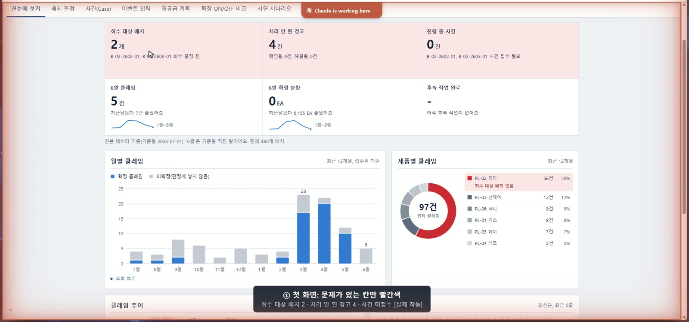
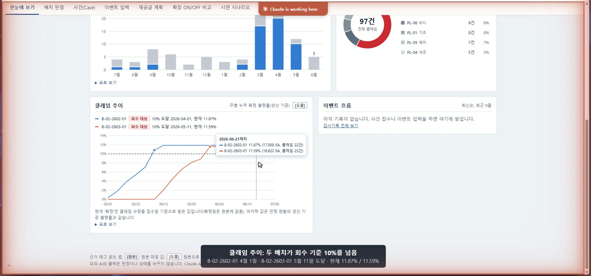
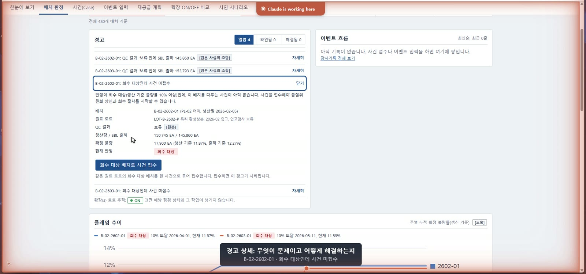
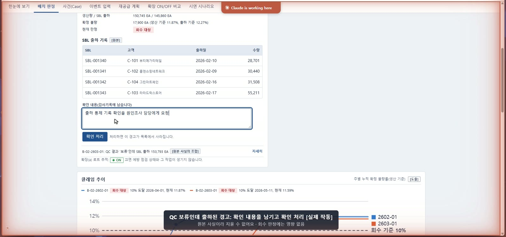
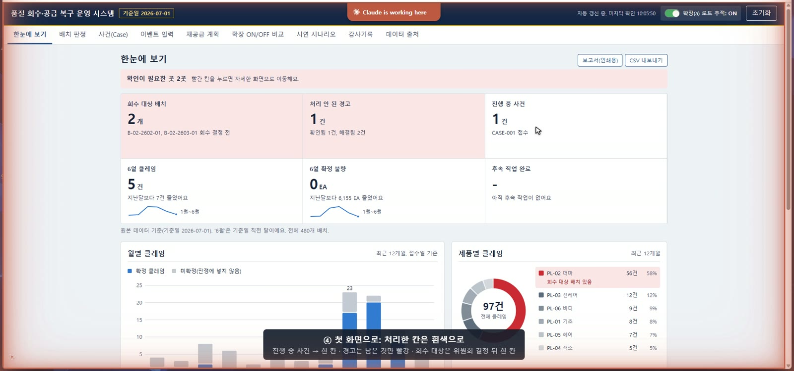
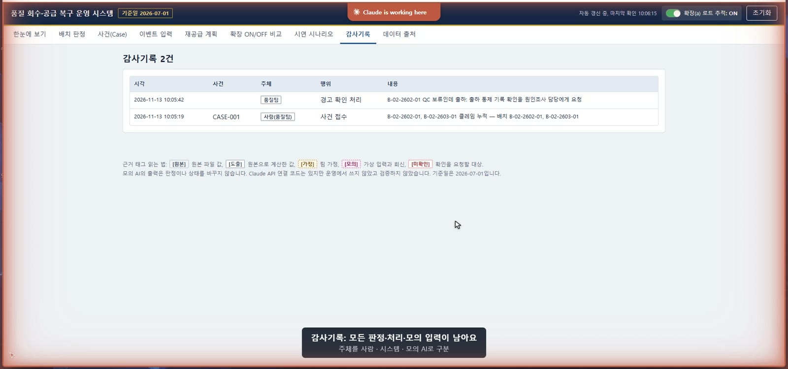
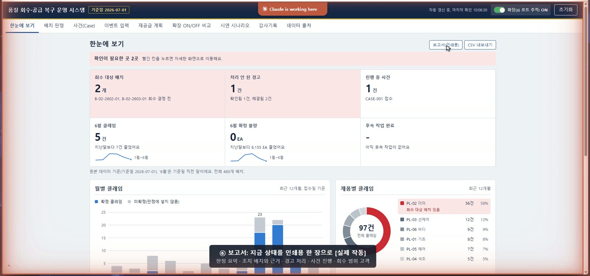
판정 전 상신, 재상신 중 통지·계획, 예외 사유 없는 한도 초과 대안은 서버가 차단. 고객 통지의 원인 확정·보상 금액·미확정 납기·언론 보도 표현도 발송 전에 막음.
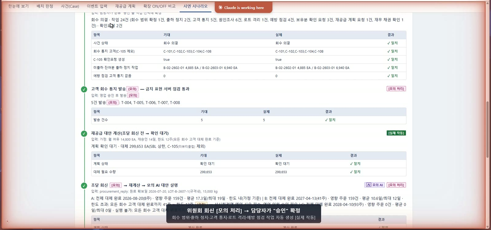
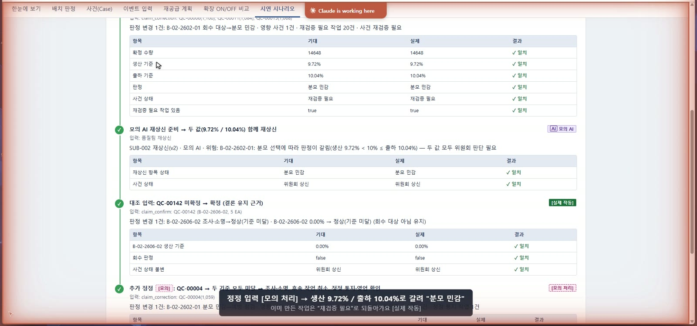
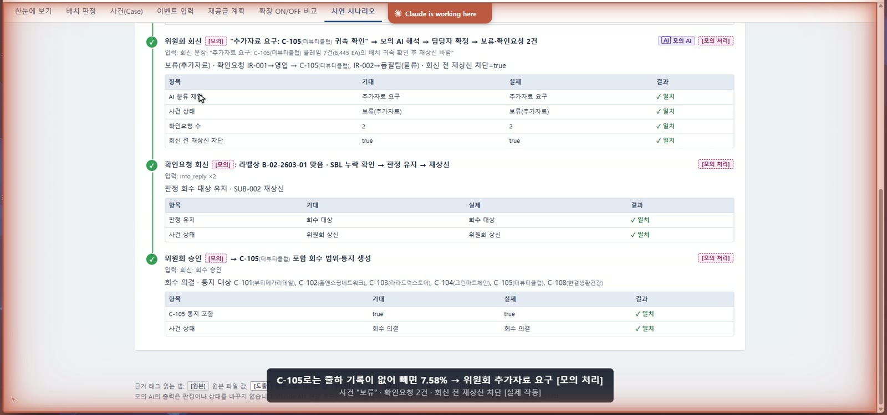
자동 테스트 85개(판정 규칙, 상태 전이, 재검증, 경고·첫 화면, 보고서, 입력 검증)를 모두 통과한 상태로 배포했습니다.
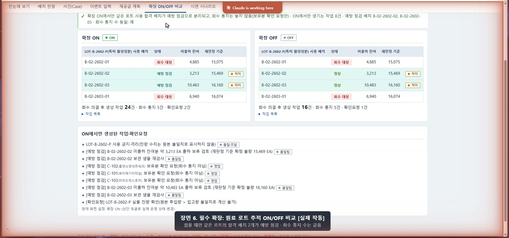
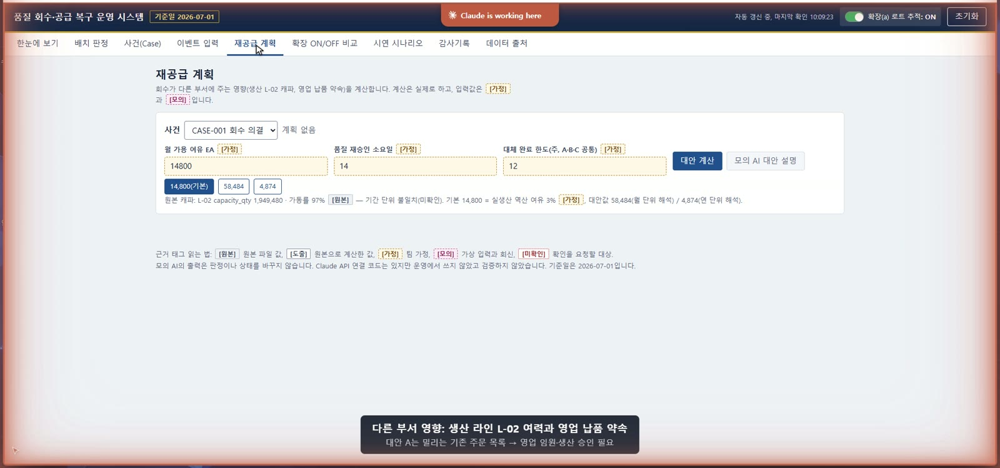
| 실제 작동 | 원본 로드, 규칙 판정·재계산, 로트 추적·예방 점검, 사건 상태 전이와 순서 통제, 작업·확인요청 생성과 재검증, 재공급 대안 계산·한도 판정, 입력 검증, 감사기록, 금지 표현 서버 점검, 첫 화면·경고 처리·보고서 |
|---|---|
| 모의 처리 | 품질위원회 회신, 영업 임원·생산 승인, 조달·고객 회신, 판정 정정 입력, 통지 발송(실제 발송 없음) |
| 설계 단계 | ERP·메일 연동, 원인조사 결론 |
| AI | 규칙·템플릿 기반 모의 AI(비용 0원)로 고정. 근거 요약·미확인 지적·상신문 초안, 회신 분류 제안, 대안 설명·안내 초안을 만들지만 판정·상태는 바꾸지 못함. Claude API 경로는 코드에 있으나 운영에서 쓰지 않음. |
| 사람 승인 | 상신(품질팀) · 회수 의결(품질위원회) · 회신 분류 확정(담당자) · 재공급 대안 승인(영업 임원·생산) · 초안 적용·발송(담당자) |
| 데이터 | 대회 원본 CSV를 무수정 복사(SHA-256 기록). 가정값은 화면에 [가정]으로 표시하고 바꿀 수 있음. 없는 정보는 확인요청·보류로 처리. |
배포: https://axwar-assignment-xjdg.axhub.app · 화면 상단 '초기화'로 처음 상태로 되돌릴 수 있음.